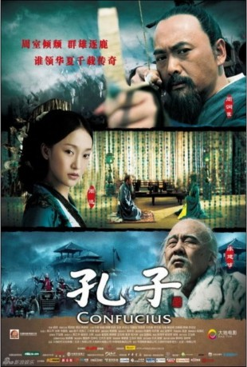

#9513 Konfuzius
 
 IMDB-Wertung: 6.2 / 10
IMDB-Wertung: 6.2 / 10  Metascore: 0
Metascore: 0 
Im 5. Jahrhundert vor Christus zählt der weise Schriftgelehrte Kong Qiu zu den einflussreicheren Bürgern im Königreich Lu. Im Zuge eines Streits mit despotischen Clanführern entdeckt der König sein Talent und befördert ihn erst zum Minister und dann zum offiziellen Strategen in den Auseinandersetzungen mit benachbarten Fürstentümern. Seine Rivalen aber warten nur auf eine Gelegenheit, es ihm heimzuzahlen, und so muss Kong Qiu vorübergehend sogar ins Exil fliehen. Seine Philosophie aber wird zur geistigen Grundlage des geeinten China.
Jahr: 2010
Dauer: 125 Minuten
FSK:
Land: China Studio: New KSMTonspuren:
Untertitel:
Auflösung: 1080p (1920x824) Größe: 6973 MB
Genre: Drama, Geschichte, Biographie
Regisseur: Mei Hu
Drehbuch: Khan Chan, Qitao Jiang, Yanjiang He, Mei Hu
Soundtrack: Jiping Zhao
Darsteller:
 Yun-Fat Chow als Confucius
Yun-Fat Chow als Confucius Xun Zhou als Nanzi
Xun Zhou als Nanzi- Jianbin Chen als Ji Sunsi
- Quan Ren als Yan Hui
- Yi Lu als Ji Sunfei
- Zhenyu Qiao als Son of Confucius
- Ran Chen als (uncredited)
- Lu Yao als The Ruler of Lu
- Kai Li als Wife of Confucius
- Ban Wang als Shu Sunwu
- Huanshan Xu als Laozi, the Sage of Daoism
- Jingwu Ma als The Ruler of Qi
- Yanjun Bi als The Ruler of Wei
- Huichun Wang als Li Chu
- Wenbo Li als Zilu
- Ma Qiang als Ran Qiu
- Jinming Kan als Zigong
- Fengchao Liu als Qi Sigong (Adult)
- Chen Rui als Daughter of Confucius
- Shera Li als Nishang
- Yongchen Liu als Gongxichi
- Xingzhe Zhang als General Gongshan Niu
- Gong Jie als Maidservant
- Gao Tian als Qi Sigong (Teenage)
- Weidong Chen als Zeng Can
- Qingyuan Wang als Zeng Dian
- Ma Yong als Gong Boliao
- Li Huan als The Prince of Wei
- Zhiwu Dong als Yan Zhuoju
- Liansheng Wu als Meng Sunhe
- Gu Yang als Hou Fan
- Wenguang Huang als Retainer of Ji Clan
- Li Chunpeng als Ziyou
- Chen Liejun als Zigao
- Tang Muchun als Zixia
- Yongqing Ji als Shen Juxu
- Jiantao Zhou als Le Shuo
- Minghan Luo als Ran Yong
- Huang Jiao als (uncredited)
- Kaili Zhang als (uncredited)
Datei: X:\HD-Eastern-Classic(A-M)\Konfuzius (2010, FSK, 1920x824).mkv seit 05.09.2018
Festplatte: HD Eastern+Western
 Es gibt insgesamt 63 Filme in der Gruppe 'HD-Eastern-Classic(A-M)'
Es gibt insgesamt 63 Filme in der Gruppe 'HD-Eastern-Classic(A-M)'